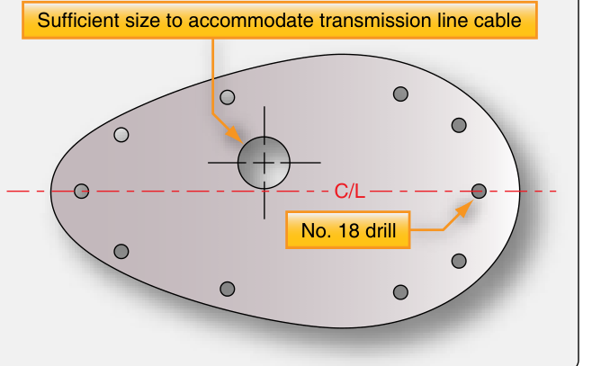

Step 1 of 6
Template
Mark the location from the installation drawing. Tape the template on the fore-and-aft centerline, then drill the mounting holes and the hole for the coax.
“Refer to installation drawing before drilling holes in aircraft skin to determine proper size and spacing.”
Source: AC 43.13-2B, par. 309b(1).
